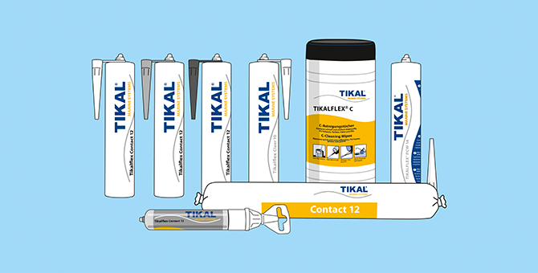
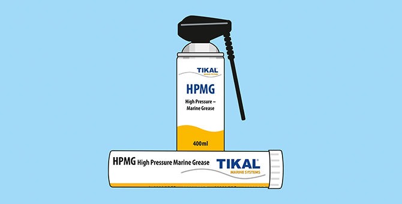
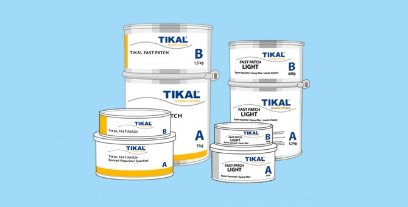
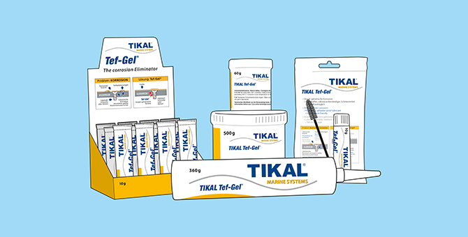
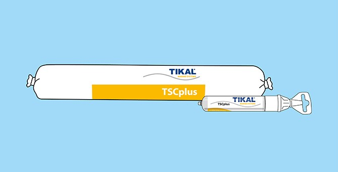
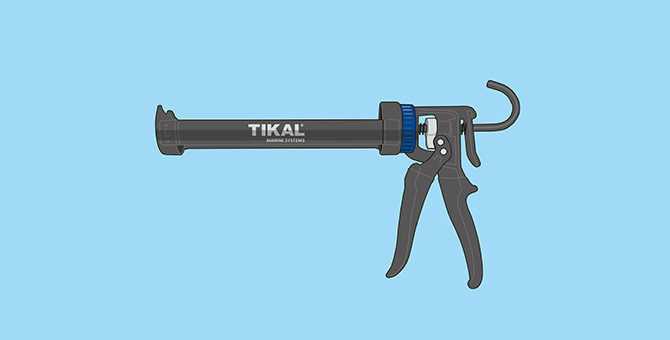

MF Nautic, Tikal Marine Systems GmbH'nin Türkiye'deki resmi distribütörü olarak; yapıştırıcı, mastik, teak deck bakım ürünleri ve deniz yağlayıcılarını profesyonel tersane ve yat sahiplerine ulaştırıyor.
Yapıştırıcıdan teak güverte bakımına, deniz yağlayıcısından uygulama aletlerine kadar denizcilik sektörünün ihtiyaç duyduğu her şey.

MS Polimer esaslı, suya dayanıklı, yüksek mukavemetli yapıştırıcı ve mastik serisi.
İncele
Deniz ortamına özel geliştirilmiş yüksek performanslı gres ve yağlayıcılar.
İncele
Hızlı kuruyan, kolay zımparalanan profesyonel tekne dolgu macunları.
İncele
Metal bağlantı elemanlarını elektroliz korozyonuna karşı koruyan özel gres.
İncele
Teak güverte bakımı, onarımı ve temizliği için komple ürün gamı.
İncele
Uygulama tabancaları, derz aletleri ve yüzey temizleme ürünleri.
İnceleTikal Marine Systems GmbH, yapıştırıcı, mastik ve bakım ürünlerini kendi laboratuvarında geliştirip üreten, Avrupa tersaneleri ve yat üreticileri tarafından tercih edilen bir marka.
Göcek/Fethiye merkezimizden, tersaneler, yat işletmeleri ve profesyonel uygulayıcılar için stok, teknik destek ve hızlı sevkiyat sağlıyoruz.
Kategori sayfalarından ihtiyacınıza uygun ürünü belirleyin.
WhatsApp, e-posta veya iletişim formuyla bize yazın.
Size özel fiyat teklifi ve stok durumunu paylaşalım.
Siparişiniz Türkiye'nin her yerine güvenle gönderilsin.